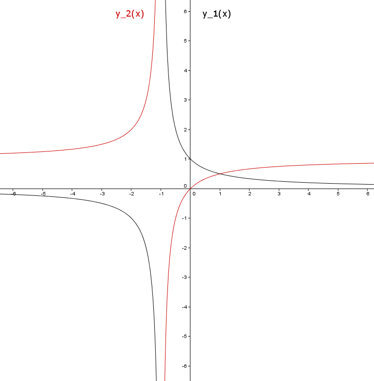
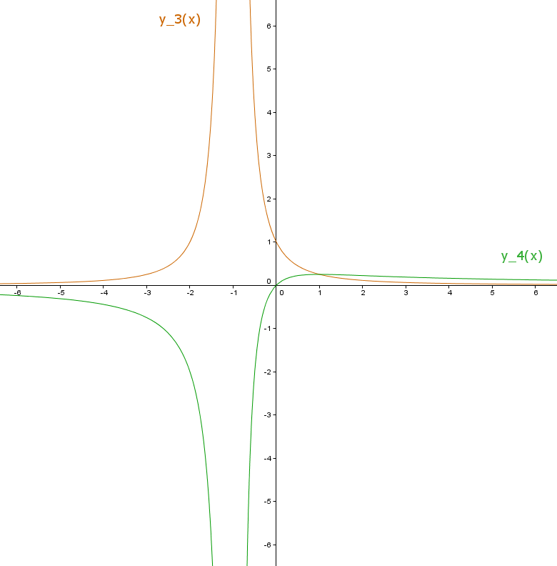
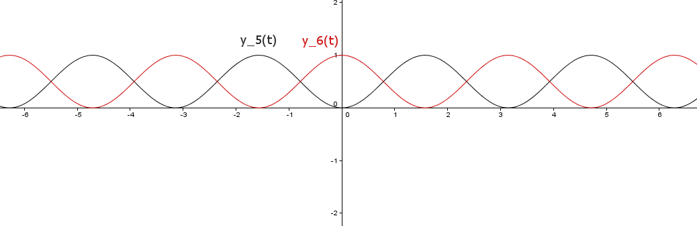
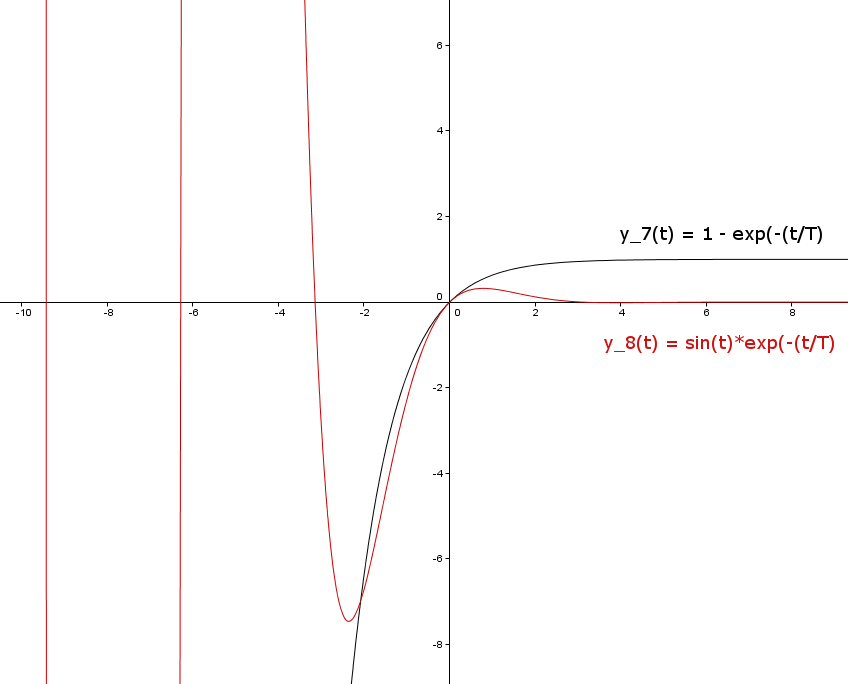
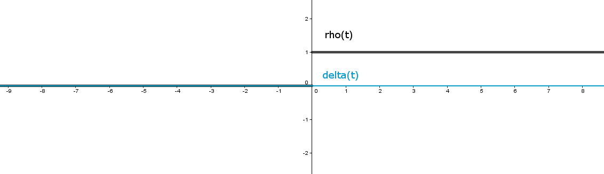
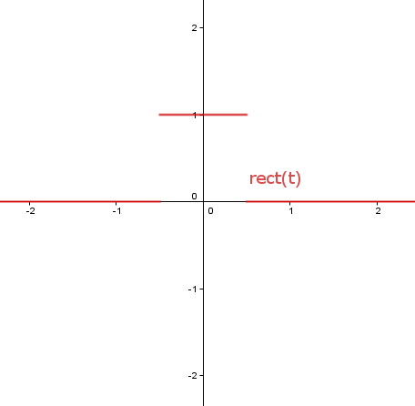

2.1
a)
(erstellt mit GeoGebra)
\( y_1(x) = \frac{1}{1 + ax}, ~ y_2(x) = \frac{ax}{1 + ax} \)

(erstellt mit GeoGebra)
\( y_3(x) = \frac{1}{(1 + ax)^2}, ~ y_4(x) = \frac{ax}{(1 + ax)^2} \)
b)
(erstellt mit GeoGebra)
\( y_5(t) = sin^2(\omega t), ~ y_6(t) = cos^2(\omega t) \)
c)
(erstellt mit GeoGebra)
\( y_7(t) = 1 - e^{- \frac{t}{T}} \\ y_8(t) = sin(t) \cdot e^{- \frac{t}{T}} \)
d)
(erstellt mit GeoGebra)
\( \sigma (t) = \left \{ \begin{array}{ll} 0 ~für ~t < 0 \\ 1 ~für ~t \geq 0 \end{array} \right \} \\ \delta (t) = \frac{d \sigma (t)}{dt} \)

(erstellt mit GeoGebra)
\( rect(t) = \left \{ \begin{array}{ll} 1 ~für ~ |t| \leq 1/2 \\ 0 ~für ~ |t| > 1/2 \end{array} \right \} \)
2.5
b)
Ju, Chae, Choi et. al. ist es gelungen, einen am Körper getragenen Energy Harvester zu entwickeln, der über Vibrationen Energie gewinnt. Anstelle des piezoelektrischen Effekts nutzen sie hierfür Permanentmagnete im Zusammenspiel mit magnetischem Material. Dies ist ein neuer Ansatz für ein altes Problem, basiert allerdings auf denselben Überlegungen.Der Energy Harvester dürfte primar bei körpernaher Elektronik zum Einsatz kommen, da er auf Körpervibrationen beruht. Handys, Körpersensoren und sonstige Wearables könnten von ihm profitieren.
Außerhalb körpernaher Anwendungen gibt es effizientere Methoden, um Strom zu gewinnen.
S. Ju, S. H. Chae, Y. Choi et. al.: LOW FREQUENCY VIBRATION ENERGY HARVESTER USING MSMA/PZT LAMINATE STRUCTURE AND BALL MAGNET. http://cap.ee.ic.ac.uk/~pdm97/powermems/2012/oral/O1A-1.pdf (9. Mai 2015).
Conformal piezoelectric energy harvesting and storage from motions of the heart, lung, and diaphragm:
Ein großes medizinisches Problem besteht darin, Herzschrittmacher und andere elektrische Implantate im menschlichen Körper mit Strom zu versorgen. Normalerweise wird dieses Problem gelöst, indem dem Patienten eine langlebige Batterie implantiert wird, die dennoch in regelmäßigen Abständen ausgetauscht werden muss. Es würde daher einen großen Fortschritt bedeuten, wenn das Implantat sich autark mit Strom versorgen könnte.
In diesem Sinne hat die Forschung der Ingenieursgruppe um Dagdeviren, Duk Yang und Su eine herausragende Bedeutung. Ihr Ansatz ist es, Strom zukünftig aus den Bewegungen menschlicher Organe in-vivo zu generieren, um so eine Stromversorgung ohne weiteren Eingriff von außen sicherzustellen. Dazu könnten piezoelektrische Bauteile am Herzen, der Lunge oder dem Zwechfell genutzt werden.
Dieser Ansatz ist hochinnovativ, weil er eine völlig neue Methode zur innerkörperlichen Stromversorgung vorschlägt. Das Anwendungsgebiet ist die Medizin: Nicht nur Herzschrittmacher, sondern auch innere Sensoren zur Überwachung der Herz- und Lungenaktivität könnten durch diese Forschung profitieren. Da es sich um Grundlagenforschung handelt, können noch keine Aussagen hinsichtlich Effizienz gemacht werden.
Canan Dagdeviren, Byung Duk Yang, Yewang Su et. al.: Conformal piezoelectric energy harvesting and storage from motions of the heart, lung, and diaphragm. http://www.pnas.org/content/111/5/1927.full (9. Mai 2015)
c)
Primärzellen "Batterie"
| Bauform | Abmessung | Spannung V |
Ladungsmenge Ah |
Energie Wh |
Energiedichte Wh/kg |
Preis ca. Eu |
Preis/Wh Eu |
(Preis/Wh)/Preis Haushaltsstrom (Wh) |
|---|---|---|---|---|---|---|---|---|
| AAAA | ca. 42,5 mm × d=8,3 mm | 1,5 | 0,5-0,6 | 0,75-0,9 | 100-130 | 0,60 | 0,67-0,8 | 2310,3 |
| AAA | ca. 43 mm x d=10 mm | 1,5 | 1,2 | 1,8 | 15,25 | 0,60 | 0,33 | 1145 |
| AA | ca. 50 mm x d=14 mm | 1,5 | 2,3 | 3,45 | 150 | 0,46 | 0,13 | 4510 |
| C | ca. 50 mm x d=27 mm | 1,5 | 8 | 12 | 179,11 | 0,60 | 0,05 | 1720 |
| D | ca. 60,5 mm x d=33 mm | 1,5 | 18 | 17 | 188 | 0,95 | 0,06 | 2010 |
| N | ca. 30,2 mm x d=12 mm | 1,5 | 0,825 | 1,24 | 124 | 0,6 | 0,48 | 1655 |
| 1604D |
Sekundärzellen "Akkumulator"
| Bauform | Abmessung | Spannung V |
Ladungsmenge Ah |
Energie Wh |
Energiedichte Wh/kg |
Preis ca. Eu |
Preis/Wh Eu |
(Preis/Wh)/Preis Haushaltsstrom (Wh) |
|---|---|---|---|---|---|---|---|---|
| AAAA | ca. 42,5 mm × d=8,3 mm | 1,2 | ||||||
| AAA | ca. 43 mm x d=10 mm | 1,2 | 0,8 | 0,96 | 73,85 | 1,44 | 1,5 | 5172 |
| AA | ca. 50 mm x d=14 mm | 1,2 | 2 | 2,4 | 92,31 | 1,875 | 0,78 | 2689,66 |
| C | ca. 50 mm x d=27 mm | 1,2 | 3 | 3,6 | 45 | 0,6 | 0,17 | 586,21 |
| D | ca. 60,5 mm x d=33 mm | 1,2 | 10 | 12 | 133 | 1 | 0,08 | 275,86 |
| N | ca. 30,2 mm x d=12 mm | 1,2 | ||||||
| 1604D |
Zunächst fällt auf, dass die Preise für Strom aus Batterien oft um das tausendfache höher sind als für Haushaltsstrom. Außerdem zeigt sich, dass die Effizienz der Batterien bezogen auf das Gewicht unabhängig von der Größe ist und Batterien generell eine höhere Kapazität als Akkus haben, jedoch nicht mehr, wenn man die Anzahl der Ladezyklen eines Akkus einbezieht. Unter Gesichtspunkten des Umweltschutzes sind daher zwei Ergebnisse wichtig:
Erstens: Batterien sollten nur da eingesetzt werden, wo es absolut unmöglich ist, an Systemstrom zu kommen. Zweitens: Im Zweifel sind Sekundärzellen Primärzellen vorzuziehen, da diese über ihre Betriebsdauer gesehen sehr viel effizienter Strom bereitstellen.
Ein weiterer wichtiger Faktor fällt in den Tabellen überhaupt nicht auf: Batterien benötigen seltene Rohstoffe und müssen transportiert werden. Dies ist ein weiterer Grund, mit ihnen möglichst sparsam umzugehen.
Quellen: wikipedia.org, amazon.de